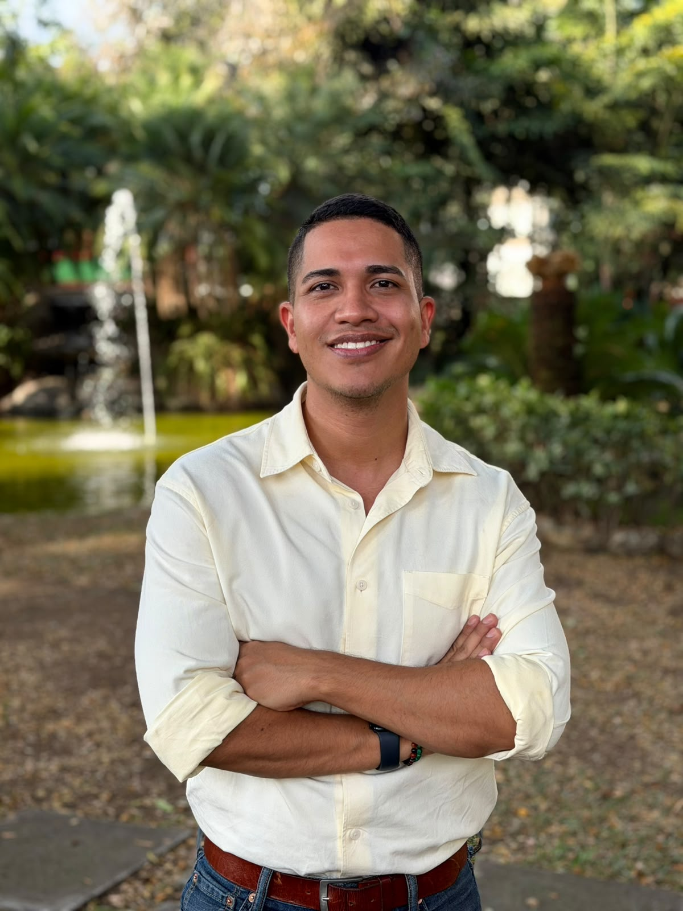

PAZMEMORIA · CONFLICTO · VISIBILIDAD
02 — REPORTAJE
LGBTI, las víctimas que ya no quieren ser invisibles
Proyecto periodístico publicado en El Tiempo.
Leer reportaje ↗PERIODISMO · COMUNICACIÓN DIGITAL · IA
Soy Andrés Camilo Osorio Sánchez. Periodista digital, docente universitario y director académico. Exploro la intersección entre periodismo, tecnologías emergentes, narrativas digitales y educación.

01 / PERSPECTIVA
Mi trabajo parte de una inquietud: cómo cambian las formas de contar, investigar, enseñar y conectar cuando aparecen nuevas plataformas, lenguajes y tecnologías.
02 / PROYECTOS
Una selección de proyectos periodísticos y académicos que muestran distintas formas de investigar, narrar y experimentar con medios digitales.
Reportaje publicado en El Colombiano sobre la manipulación genética de la hoja de coca para aumentar su productividad.
Ver proyecto ↗Proyecto periodístico publicado en El Tiempo.
Leer reportaje ↗Video en 360° realizado para El País de Cali.
Ver experiencia ↗PODCAST · MAESTRÍA EN COMUNICACIÓN DIGITAL · UAO
Podcast que analiza y estudia tendencias de comunicación en plataformas digitales y tecnologías emergentes.
03 / IDEAS
Preguntas sobre las transformaciones del ecosistema mediático, las audiencias y las tecnologías.
Universidad Autónoma de Occidente · Cali.
Universidad Anáhuac · Cancún, México.
Coordinación del semillero adscrito a la Vicerrectoría de Investigaciones, Innovación y Emprendimiento de la UAO.
04 / ACADEMIA
La docencia es otro laboratorio: un espacio para poner a prueba metodologías, lenguajes y preguntas.
Director y profesor universitario · 2022 — actualidad
UAO / POSGRADO Especialización en Comunicación y Periodismo con Inteligencia ArtificialDirector y profesor universitario · 2022 — actualidad
05 / TRAYECTORIA
Una trayectoria profesional que cruza redacciones, plataformas digitales y universidad.
Maestría en Comunicación Digital y Especialización en Comunicación y Periodismo con Inteligencia Artificial.
06 / RECONOCIMIENTOS
Periodismo judicial en América Latina · Argentina.
Mejor Cubrimiento de una Noticia · El País.
Fojo Media Institute · Estocolmo, Suecia.
Periodismo Digital · “Cali confiesa sus pecados”.
07 / CONTACTO
Periodismo, comunicación digital, inteligencia artificial, educación, investigación o un proyecto que todavía no tiene nombre.